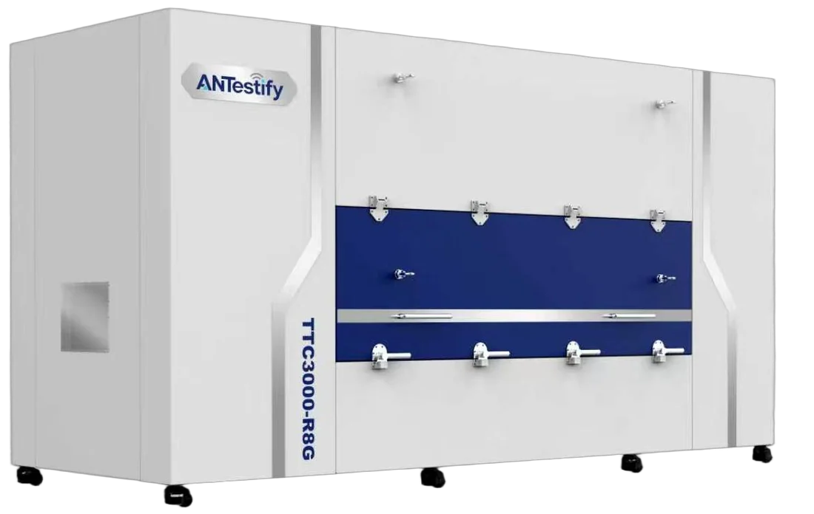
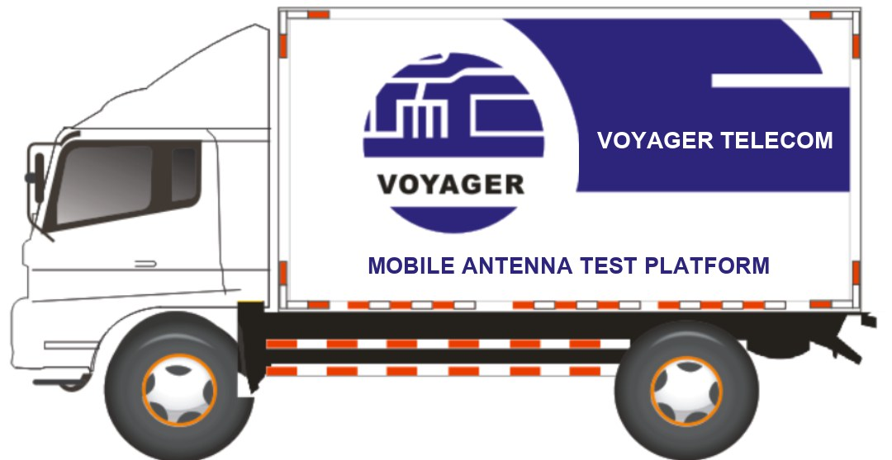
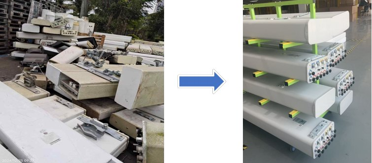

Testing at every stage of an antenna's life
An antenna is checked at the factory, on delivery, before installation and after repair. Each check has different needs. Our systems and services are built around them.
Factory outgoing inspection
Production lines now finish an antenna every few minutes. Laboratory ranges cannot keep up, so most factories test radiation performance on a small sample and rely on circuit checks for the rest.
- Test more of what you ship. Full or high-frequency sampling inspection at the end of the line, with radiation, circuit, PIM and RET tests at one station.
- Consistency you can show. Every result is stored against the product serial number, ready for customer audits and quality reviews.
- Fits on the factory floor. A movable chamber under 10 m², no dedicated anechoic room and no building works.
Recommended: TTC3000-R4G / R8G for full testing, or B and H models where radiation is tested elsewhere.
TTC3000 Integrated Testing System

Arrival and pre-installation testing
A faulty antenna found after installation costs a second tower climb and leaves a performance problem in the network until it is fixed. A VSWR check alone cannot reveal a radiation fault.
- Arrival inspection. Check antenna quality at the warehouse on delivery, and hold suppliers to the specification you bought.
- Pre-installation testing. The vehicle-mounted platform tests antennas near the site before they go up, avoiding a second climb.
- Rapid restoration. A self-contained field model supports network recovery after disasters.
- Equipment or service. Buy the system and test in-house, or have antennas tested as a third-party service.
Refurbished antennas, proven before they go back
Networks retire large numbers of antennas that can be repaired. Refurbishment only makes sense if every repaired antenna is tested to the same specification as a new one. That is where our test systems come in.
- Automated testing and fault analysis on the repair line, with assisted fault location to guide the repair.
- A standardised repair process that restores every technical specification required for network re-entry.
- Documented results for each antenna, so the operator can put refurbished units back into service with confidence.

Repair instead of replace
Challenge
Decommissioned and faulty antennas were piling up. Replacing rather than repairing meant high procurement costs and growing electronic waste.
Approach
China Mobile Hainan commissioned Voyager to provide end-to-end testing, repair and refurbishment with our own equipment, restoring every specification to the standard for network re-entry.
Result
Idle assets returned to service, hardware spending reduced, and less electronic waste and manufacturing emissions.
Telecom equipment repair and maintenance
Antenna testing grew out of nearly three decades of network service. Voyager still tests, repairs and maintains repeaters, base station equipment, telecom power and transmission equipment, supported by test platforms we design ourselves.
Not sure which approach fits?
Describe where and how you test antennas today. We will suggest equipment, a service, or a mix of both.